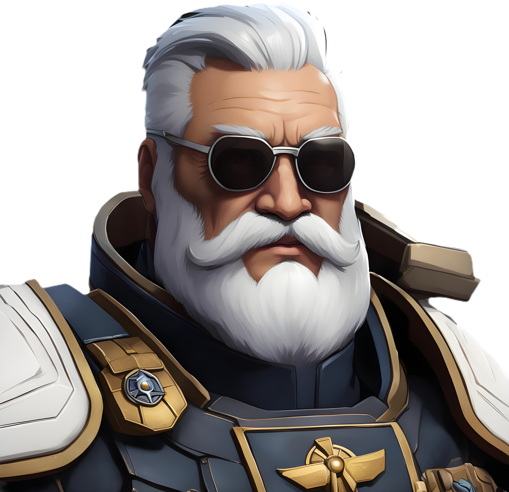

The Voidquill Archive

Mik
"Mik used to be part of an old school mercenary faction called (LMF) Levi´s Mercenary Fleet. (Levi being the leader) in a solar system simply called sector 42. Its a highly corrupt system perfect for people wanting to make cash in questionable ways. The leader of sector 42 (Arnok) had a political rival he wanted to get rid of. and Hired LMF to deal with it. but once the task was done, Arnok send his entire fleet towards LMF on a suprise attack has he didnt want evidence of what he hired us to do. we were completly unprepared for the attack and scattered all over the galaxy. With me ending up in atk07."
— Recovered from the FPF Database